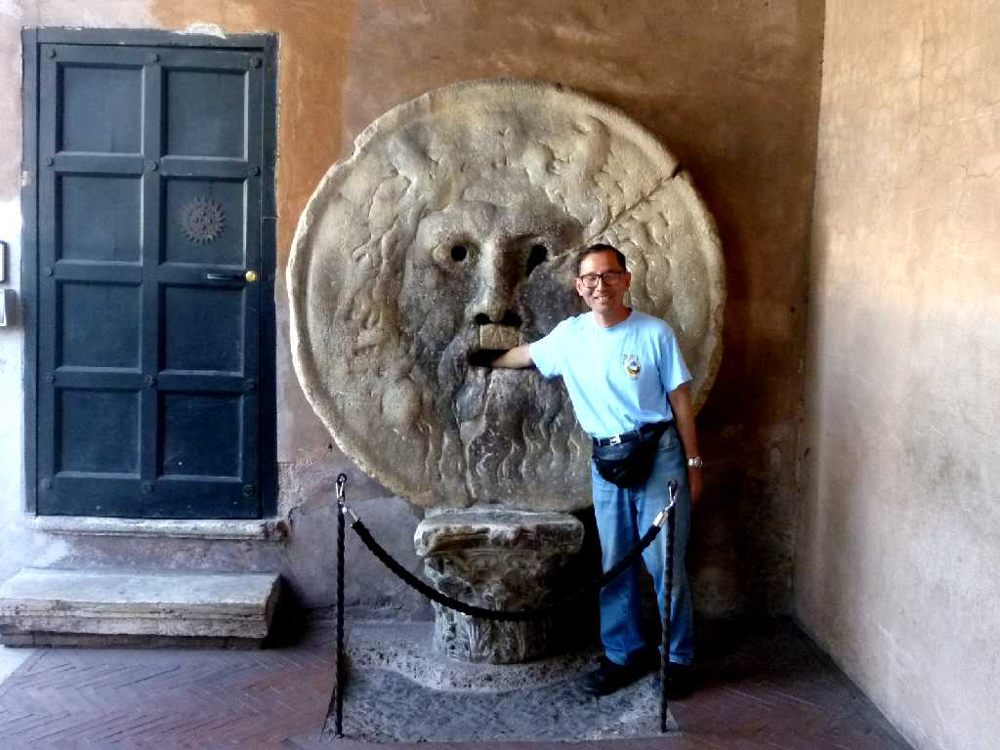
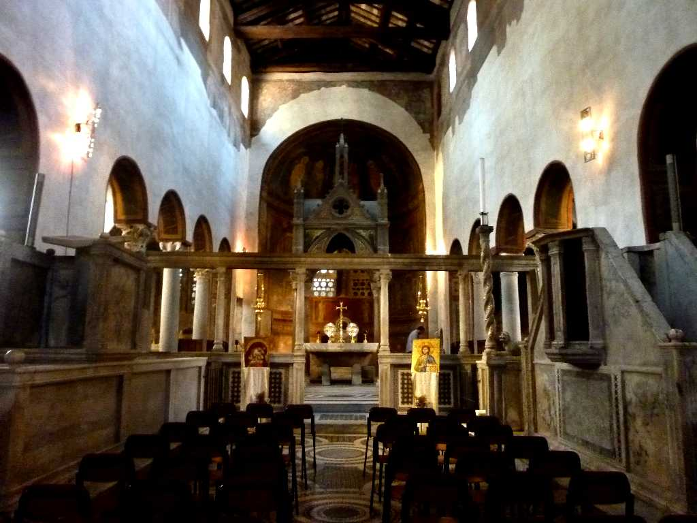
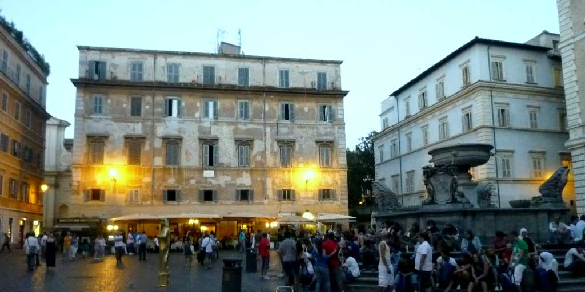
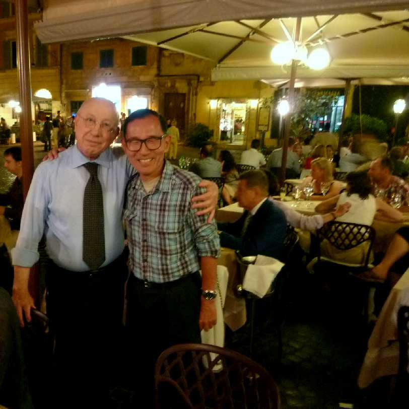

June 23 2011 Bocca della Voritaa Basilica di Santa Maria in Cosmedin Roma
真実の口は手を口に入れると偽りの心がある者はその手首を切り落とされるまたは手が抜けなくなるという伝説がある サンタマリアインコスメディン聖堂の外壁にある海の神トリトンの彫刻で元々はローマ時代の下水道のマンホールの蓋と考えられている 大行列に並びやっとたどり着く

Basilica di Santa Maria in Cosmedin Roma
６世紀頃の食料市場を教皇ハトリアヌスⅠ世により７８２年にギリシャ人修道士のために改築された聖堂 真実の口に比べ本堂は空いていた

Ristrante Sabatini Plaza Trastevere Roma
日本に本格イタリア料理を紹介し青山に支店を持つリストランテサバティーニローマでイタリアの魚フルコース料理を味わう

June 23 2011 Ristrante Sabatini